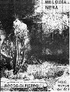
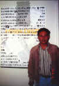
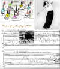
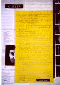
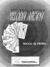
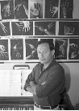

| The Music |
|
 |
Melodia
Nera (Black Melody) was written for Jan Williams as a solo for timpani.
It was first performed in Denmark and later performed by Anthony
Miranda. | Black Melody
| Audio Clip
| Musical Score
| |
|
|  |
Prison Dirges
is multimedia piece which takes up an entire evening. It consists
of seperate panels in sound, which are detachable as chamber works.
Sections of it were first performed on Altcatraz Island, in San
Francisco.
Prison Dirges
- Audio Clip - Musical Score#1
- MusicalScore#2 - Life StoriesVideo
Clip 1 - Life
StoriesVideo Clip 2 |
|  |
The Hunger
Of The Sleepwalkers is a dance pantomine for a sleepwalker
dance- pianist, and accordian- pianist. It is an onieric waking
dream with slides and theatre props, with text by Bataille and
Krishnamurti.
The Hunger
Of The Sleepwalkers - Sleepwalkers
VIdeo Clip
|
|  |
Tears Of
Eros, for two reciters, viola, piano, percussion and twenty-six
tracks of sex sounds, is an oral rumination on Bataille's Death
and Sensuality.
Tears Of
Eros - Audio
Clip - Musical Score
|
|  |
Melodia Arcana
was written for Anthony Miranda and first performed at the American
School in Paris. Based on the Tarot, melodies are assigned to
the different cards in the manner of Italo Calvino.
Melodia
Arcana - The Tarot - Audio
Clip - Musical Score
|
|  |
Etudes For
Crippled Hands is a keyboard technique that was developed
after working with handicapped children. The Etudes were first
performed by the composer at the Headlands Center for the Arts,
in San Francisco.
Etudes For Crippled Hands - Audio Clip
- Musical Score
|
| Three Black American Folk Songs |
Three Black
American Folk Songs Sung by Pam Smith at the Bang On A Can Festival
with the Bang On A Can All Stars.
Audio Clip 1 - Audio
Clip 2 - Audio
Clip 3
|
| |
"Network
of Radiation" performed at the Headlands Center For The
Arts, San Francisco. |
{kind=link}
{kind=link}
{kind=link}
{kind=link}
{kind=link}
{kind=link}
{kind=link}
{kind=link}
{kind=link}
{kind=link}
{kind=link}
{kind=link}